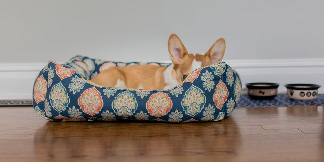

Accesorios
Aqui vas a poder encontrar todo tipo de accesorios para tu mascota!
Hay tres tipos de alimento para mascotas: alimentos secos, semi húmedos y enlatados. Cada alimento para mascota se diferencia según la humedad, el costo, el gusto y la calidad nutritiva por Kg. de alimento. Todos estos factores deben considerarse al evaluar una dieta alimentaria para su mascota. A pesar de estas diferencias, gracias a la tecnología avanzada todos los tipos de alimento para mascotas están formulados para proporcionar una nutrición completa y balanceada
La gran cantidad de opciones que tienen los dueños de mascotas cuando compran alimento para mascotas a veces dificulta la decisión de qué producto comprar. Es importante considerar el lugar donde comprar, la capacidad adquisitiva y las conveniencias, gustos y grado de digestión deseados. Mientras que el producto proporcione una nutrición 100% balanceada y completa, la clase y categoría de alimento es sólo una cuestión de preferencia del dueño.
Además de diferenciar los alimentos para mascotas según su consistencia, los productos también se distinguen en base al costo, lugar de compra, densidad nutritiva (cantidad de calorías por Kg.) y en menor grado, sabor y digestión. Productos Super Premium, Premium y No-Premium brindan una nutrición 100% balanceada y completa.
En general, los productos super premium están en el extremo superior por sus características, los productos premium están en el medio y los no-premium están en el extremo inferior por su costo y densidad nutritiva.
Algunos alimentos para mascotas se caracterizan por su sabor. Estos productos con frecuencia contienen trocitos de galletita de distintos tamaños y formas de diferentes sabores. Estos alimentos están dirigidos a los dueños de mascotas que están interesados en complacer a su mascota y ofrecerle una gran variedad.
En general, los productos super premium están en el extremo superior por sus características, los productos premium están en el medio y los no-premium están en el extremo inferior por su costo y densidad nutritiva.
Algunos alimentos para mascotas se caracterizan por su sabor. Estos productos con frecuencia contienen trocitos de galletita de distintos tamaños y formas de diferentes sabores. Estos alimentos están dirigidos a los dueños de mascotas que están interesados en complacer a su mascota y ofrecerle una gran variedad.

Cama Milo
Un formato conveniente para el descanso de una mascota, que no es solo una cama, sino un marco en forma de rodillos o laterales.

Cama Soft
Perfecta para perros y gatos de tamaño chico!
Es muy comoda y suave.
Hecha de materiales reciclados.

Cama Velvet
Esta es la opción más simple y económica y es más adecuada para perros de tamaño mediano a grande!
Hecha de materiales reciclados, grande y muy cozy. .